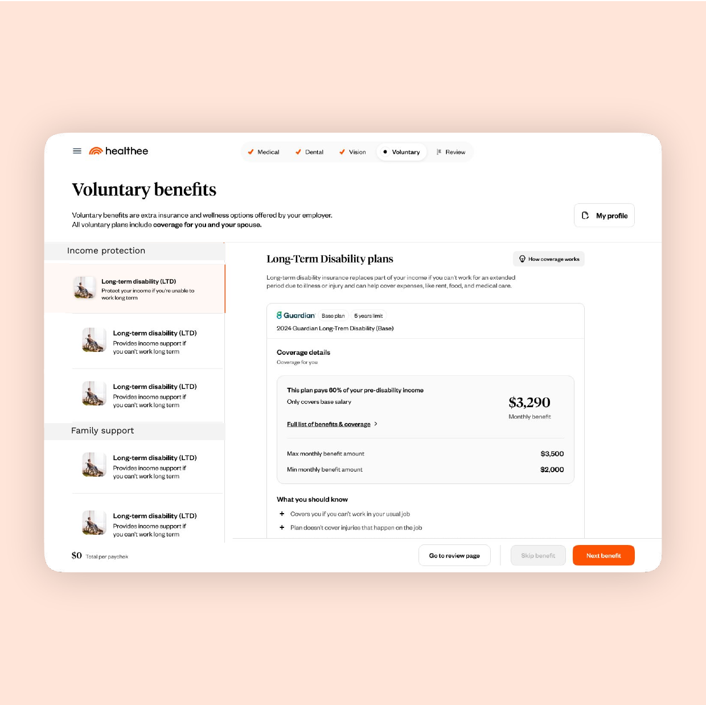
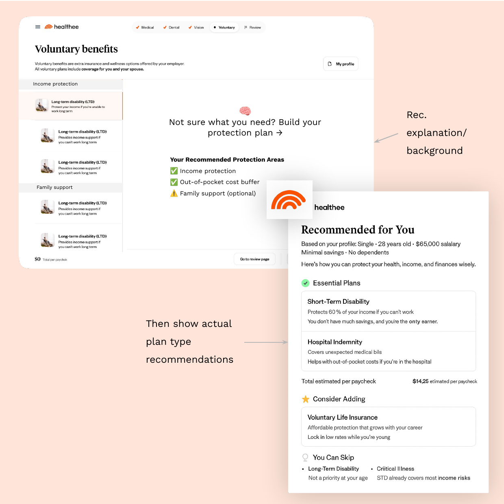
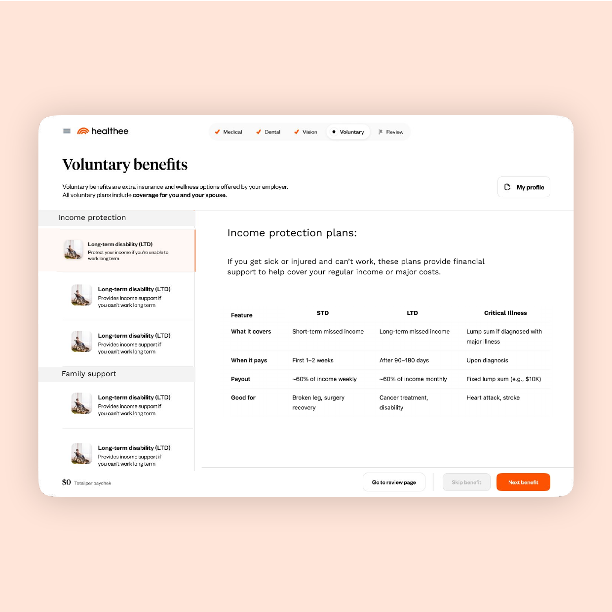
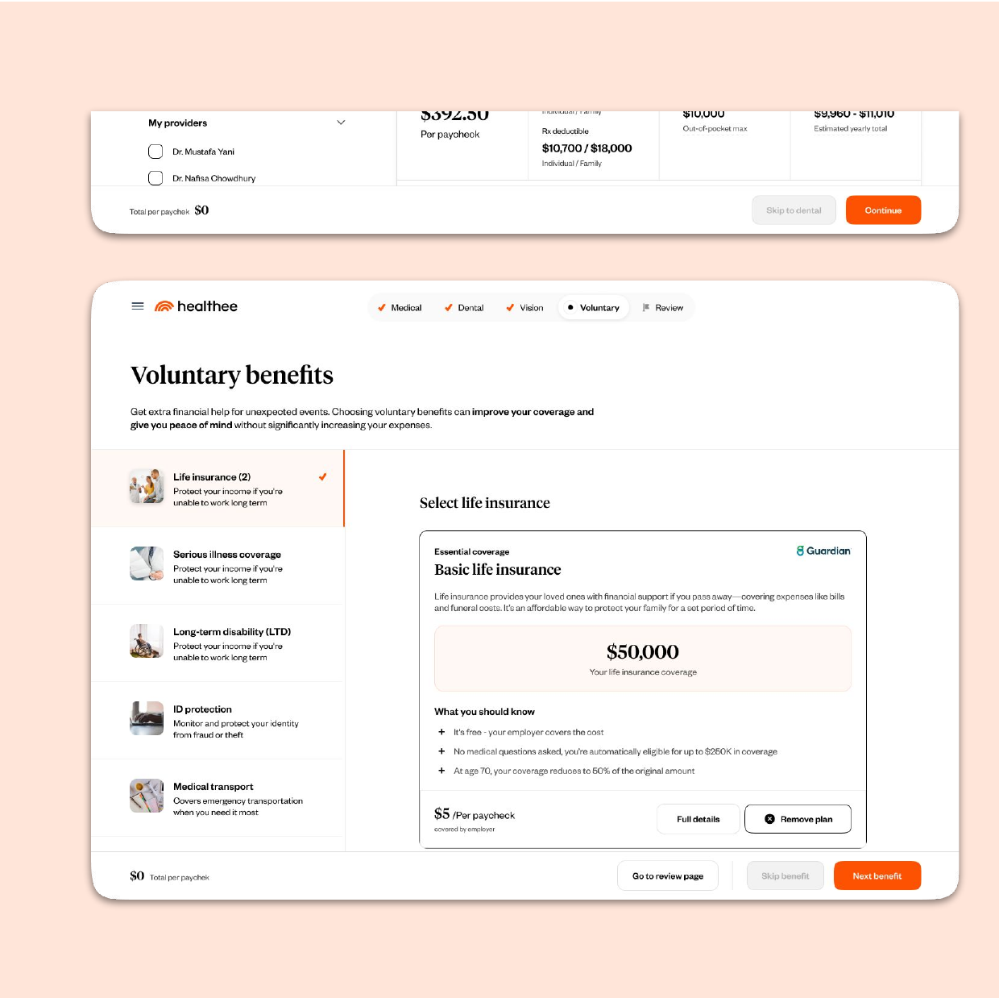
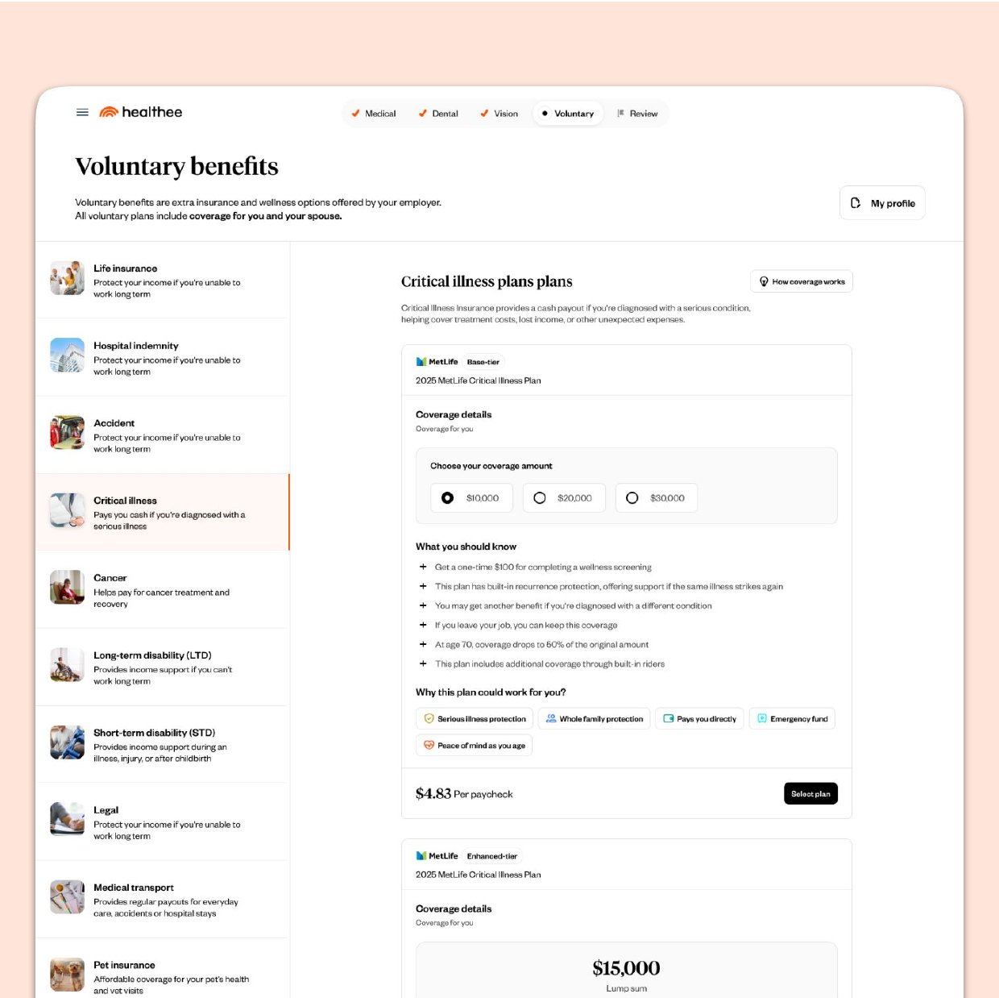
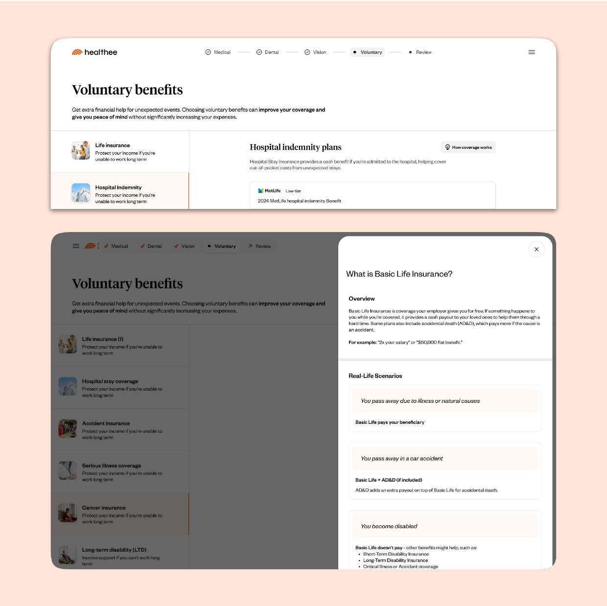

Voluntary benefits
Healthee’s decision-support tool helps employees navigate and compare the benefits their employer offers, and make informed enrollment decisions. It started with medical, dental and vision.
The tool then expanded to savings accounts and voluntary benefits, with 12 new voluntary plans in the first rollout. The challenge wasn’t adding more options. It was evolving the product architecture and experience to support a broader benefits ecosystem, while keeping it understandable and manageable for employees.

Different benefits, different decisions
Each benefit type has its own decision-making patterns, information structure, eligibility considerations and pricing model. That meant rethinking how people navigate, explore and evaluate their options.


Three kinds of decisions, three models
- Medical
- Employees are helped to find the plan that best fits their needs, so a recommendation can lead.
- Voluntary benefits
- There isn’t necessarily one recommended choice. The experience supports exploring and deciding what’s worth adding.
- Savings accounts
- Shaped by eligibility and pricing considerations.
What we ask shapes what the algorithm knows
A questionnaire feeds the recommendation algorithm. With the expansion, we added relevant new questions so the algorithm gets more appropriate inputs, supporting more accurate, personalized recommendations.
The link runs one way: UX decisions about what we ask shape the product logic, which shapes the quality of the recommendation.
The recommendation framework works in three layers: which types of coverage a person needs, which plan types fit within each, and then the best-fit specific policy.


Organizing voluntary plans by the risk they cover
Names like STD, LTD or Critical Illness don’t tell people what a plan protects them from, and many people can’t tell how plans interact. For example, whether having STD means they still need Critical Illness. We explored grouping voluntary benefits into protection areas, each tied to a real-life risk:
- Income protection: STD, LTD, Critical Illness
- Out-of-pocket cost buffer: Hospital Indemnity, Accident, Limited Medical
- Family support: Basic Life, Voluntary Life
Based on a person’s profile, each area is surfaced as Essential, Consider adding, or You can skip. Each area opens with an intro and a side-by-side comparison of its plan types, so people see how plans fit into the bigger picture before choosing one.
Grouped side navigation lets people focus on one need at a time, and new benefits can slot into an existing area without disrupting the flow.



Flexible, without losing direction
We introduced a distinct Voluntary step, with a navigation and content structure suited to that kind of decision.
The journey stays linear, and people can move between steps and revisit them. Persistent top-level navigation shows the full enrollment flow, including completed steps and the path that remains to review and completion.
The goal: people always know where they are, what’s left, and how to move forward.

One plan layout, adapted to each plan
Every plan came with its own PDF documentation, with different coverage types, services, pricing and billing conditions. I translated that material into a structured, reusable plan layout that’s consistent across plans without being a rigid template.
- Plan name, carrier and tier
- Coverage details and amounts
- Premium amounts
- Included services and plan conditions
- “What you should know”: dynamic plan highlights
- “Who is it for?”: compatibility tags that show why a plan might be relevant
- Billing frequency and payment information
Some information layers are shared across all plans. Other sections adapt to the characteristics of each plan. Each plan page also opens with a short education panel, and keeps a low bar for choosing a plan or skipping it.


Built together
I worked closely with the product manager on product decisions, including shaping the voluntary step and adapting the experience to the differences between benefit categories. With engineering, I translated product complexity into an experience the team could implement.